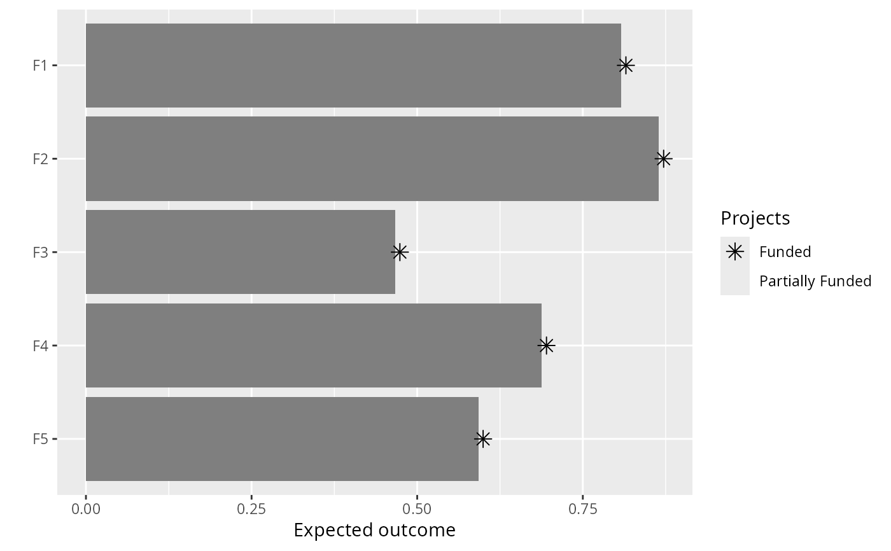
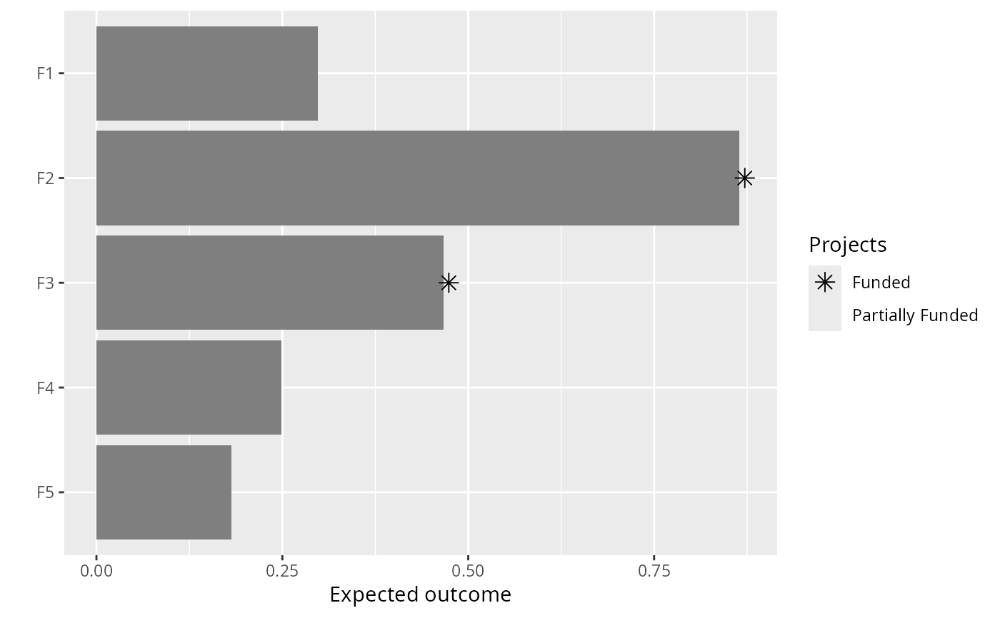

Targets are used to specify a threshold minimum outcome for each feature in a project prioritization problem. Please note that only some objectives require targets, and attempting to solve a problem that requires targets will throw an error if targets are not supplied, and attempting to solve a problem that does not require targets will throw a warning if targets are supplied.
Details
The following functions can be used to specify targets for a project prioritization problem.
add_relative_targets()Set targets as a proportion (between 0 and 1) of the maximum probability of persistence associated with the best project for each feature. For instance, if the best project for a feature has an 80% probability of persisting, setting a 50% (i.e.,
0.5) relative target will correspond to a 40% threshold probability of persisting.add_absolute_targets()Set targets by specifying exactly what probability of persistence is required for each feature. For instance, setting an absolute target of 10% (i.e.,
0.1) corresponds to a threshold 10% probability of persisting.add_manual_targets()Set targets by manually specifying all the required information for each target.
See also
Other overviews:
approaches,
constraints,
objectives,
solvers,
weights()
Examples
# load data
data(sim_projects, sim_features, sim_actions)
# build problem with minimum set objective and targets that require each
# feature to have a 30% chance of persisting into the future
p1 <-
problem(
sim_projects, sim_actions, sim_features,
"name", "success", "name", "cost", "name"
) %>%
add_min_set_objective() %>%
add_absolute_targets(0.3) %>%
add_binary_decisions()
# print problem
print(p1)
#> Project Prioritization Problem
#> actions: F1_action, F2_action, F3_action, ... (6 actions)
#> projects: F1_project, F2_project, F3_project, ... (6 projects)
#> features: F1, F2, F3, ... (5 features)
#> action costs: continuous values (between 0 and 103.226)
#> project success: proportion values (between 0.814 and 1)
#> objective: minimum set objective
#> targets: absolute targets
#> weights: none specified
#> constraints: none specified
#> decisions: binary decision
#> solver: none specified
# build problem with minimum set objective and targets that require each
# feature to have a level of persistence that is greater than or equal to
# 30% of the best project for conserving it
p2 <-
problem(
sim_projects, sim_actions, sim_features,
"name", "success", "name", "cost", "name"
) %>%
add_min_set_objective() %>%
add_relative_targets(0.3) %>%
add_binary_decisions()
# print problem
print(p2)
#> Project Prioritization Problem
#> actions: F1_action, F2_action, F3_action, ... (6 actions)
#> projects: F1_project, F2_project, F3_project, ... (6 projects)
#> features: F1, F2, F3, ... (5 features)
#> action costs: continuous values (between 0 and 103.226)
#> project success: proportion values (between 0.814 and 1)
#> objective: minimum set objective
#> targets: relative targets
#> weights: none specified
#> constraints: none specified
#> decisions: binary decision
#> solver: none specified
# \dontrun{
# solve problems
s1 <- solve(p1)
#> Set parameter Username
#> Set parameter LicenseID to value 2774703
#> Set parameter TimeLimit to value 2147483647
#> Set parameter MIPGap to value 0
#> Set parameter ScaleFlag to value 2
#> Set parameter NumericFocus to value 1
#> Set parameter Presolve to value 2
#> Set parameter Threads to value 1
#> Set parameter PoolSolutions to value 1
#> Set parameter PoolSearchMode to value 2
#> Academic license - for non-commercial use only - expires 2027-02-03
#> Warning: Gurobi version mismatch between R 13.0.0 and C library 13.0.1
#> Gurobi Optimizer version 13.0.1 build v13.0.1rc0 (linux64 - "Ubuntu 24.04.2 LTS")
#>
#> CPU model: 11th Gen Intel(R) Core(TM) i7-1185G7 @ 3.00GHz, instruction set [SSE2|AVX|AVX2|AVX512]
#> Thread count: 4 physical cores, 8 logical processors, using up to 1 threads
#>
#> Non-default parameters:
#> TimeLimit 2147483647
#> MIPGap 0
#> ScaleFlag 2
#> NumericFocus 1
#> Presolve 2
#> Threads 1
#> PoolSolutions 1
#> PoolSearchMode 2
#>
#> Optimize a model with 26 rows, 22 columns and 52 nonzeros (Min)
#> Model fingerprint: 0x21fb06c6
#> Model has 5 linear objective coefficients
#> Variable types: 0 continuous, 22 integer (22 binary)
#> Coefficient statistics:
#> Matrix range [9e-02, 1e+00]
#> Objective range [9e+01, 1e+02]
#> Bounds range [1e+00, 1e+00]
#> RHS range [3e-01, 1e+00]
#>
#> Found heuristic solution: objective 497.7671458
#> Presolve removed 25 rows and 20 columns
#> Presolve time: 0.00s
#> Presolved: 1 rows, 2 columns, 2 nonzeros
#> Variable types: 0 continuous, 2 integer (2 binary)
#>
#> Explored 0 nodes (0 simplex iterations) in 0.00 seconds (0.00 work units)
#> Thread count was 1 (of 8 available processors)
#>
#> Solution count 1: 497.767
#> No other solutions better than 497.767
#>
#> Optimal solution found (tolerance 0.00e+00)
#> Best objective 4.977671458279e+02, best bound 4.977671458279e+02, gap 0.0000%
s2 <- solve(p2)
#> Set parameter Username
#> Set parameter LicenseID to value 2774703
#> Set parameter TimeLimit to value 2147483647
#> Set parameter MIPGap to value 0
#> Set parameter ScaleFlag to value 2
#> Set parameter NumericFocus to value 1
#> Set parameter Presolve to value 2
#> Set parameter Threads to value 1
#> Set parameter PoolSolutions to value 1
#> Set parameter PoolSearchMode to value 2
#> Academic license - for non-commercial use only - expires 2027-02-03
#> Warning: Gurobi version mismatch between R 13.0.0 and C library 13.0.1
#> Gurobi Optimizer version 13.0.1 build v13.0.1rc0 (linux64 - "Ubuntu 24.04.2 LTS")
#>
#> CPU model: 11th Gen Intel(R) Core(TM) i7-1185G7 @ 3.00GHz, instruction set [SSE2|AVX|AVX2|AVX512]
#> Thread count: 4 physical cores, 8 logical processors, using up to 1 threads
#>
#> Non-default parameters:
#> TimeLimit 2147483647
#> MIPGap 0
#> ScaleFlag 2
#> NumericFocus 1
#> Presolve 2
#> Threads 1
#> PoolSolutions 1
#> PoolSearchMode 2
#>
#> Optimize a model with 26 rows, 22 columns and 52 nonzeros (Min)
#> Model fingerprint: 0x5300a0e4
#> Model has 5 linear objective coefficients
#> Variable types: 0 continuous, 22 integer (22 binary)
#> Coefficient statistics:
#> Matrix range [9e-02, 1e+00]
#> Objective range [9e+01, 1e+02]
#> Bounds range [1e+00, 1e+00]
#> RHS range [1e-01, 1e+00]
#>
#> Found heuristic solution: objective 304.1251127
#> Presolve removed 16 rows and 11 columns
#> Presolve time: 0.00s
#> Presolved: 10 rows, 11 columns, 20 nonzeros
#> Variable types: 0 continuous, 11 integer (11 binary)
#> Root relaxation presolved: 4 rows, 6 columns, 8 nonzeros
#>
#>
#> Root relaxation: objective 2.042172e+02, 0 iterations, 0.00 seconds (0.00 work units)
#>
#> Nodes | Current Node | Objective Bounds | Work
#> Expl Unexpl | Obj Depth IntInf | Incumbent BestBd Gap | It/Node Time
#>
#> * 0 0 0 204.2171997 204.21720 0.00% - 0s
#>
#> Explored 1 nodes (0 simplex iterations) in 0.00 seconds (0.00 work units)
#> Thread count was 1 (of 8 available processors)
#>
#> Solution count 1: 204.217
#> No other solutions better than 204.217
#>
#> Optimal solution found (tolerance 0.00e+00)
#> Best objective 2.042171996644e+02, best bound 2.042171996644e+02, gap 0.0000%
# print solutions
print(s1)
#> # A tibble: 1 × 21
#> solution status cost obj F1_action F2_action F3_action F4_action F5_action
#> <int> <chr> <dbl> <dbl> <lgl> <lgl> <lgl> <lgl> <lgl>
#> 1 1 OPTIMAL 498. 498. TRUE TRUE TRUE TRUE TRUE
#> # ℹ 12 more variables: baseline_action <lgl>, F1_project <lgl>,
#> # F2_project <lgl>, F3_project <lgl>, F4_project <lgl>, F5_project <lgl>,
#> # baseline_project <lgl>, F1 <dbl>, F2 <dbl>, F3 <dbl>, F4 <dbl>, F5 <dbl>
print(s2)
#> # A tibble: 1 × 21
#> solution status cost obj F1_action F2_action F3_action F4_action F5_action
#> <int> <chr> <dbl> <dbl> <lgl> <lgl> <lgl> <lgl> <lgl>
#> 1 1 OPTIMAL 204. 204. FALSE TRUE TRUE FALSE FALSE
#> # ℹ 12 more variables: baseline_action <lgl>, F1_project <lgl>,
#> # F2_project <lgl>, F3_project <lgl>, F4_project <lgl>, F5_project <lgl>,
#> # baseline_project <lgl>, F1 <dbl>, F2 <dbl>, F3 <dbl>, F4 <dbl>, F5 <dbl>
# plot solutions
plot(p1, s1)

plot(p2, s2)

# }